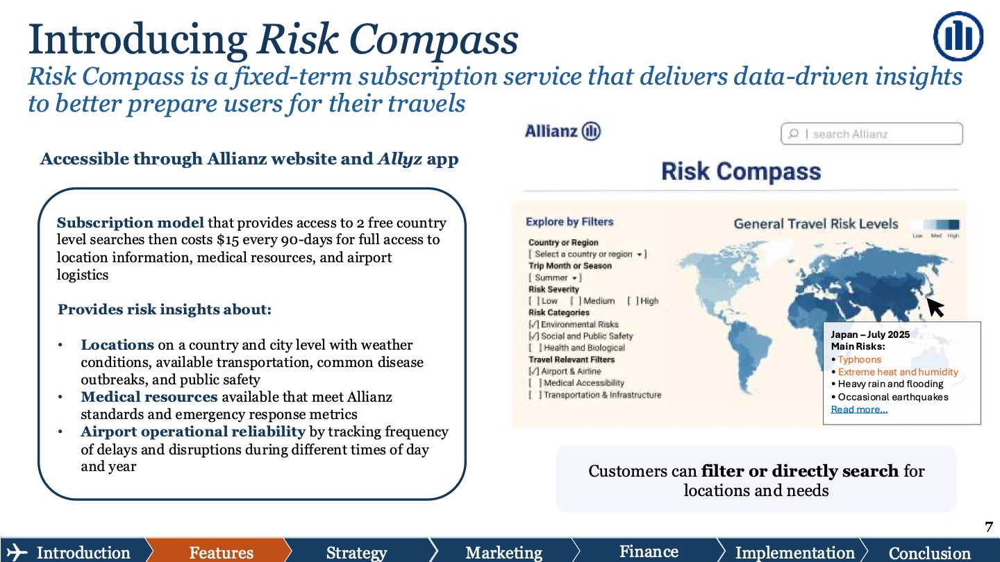
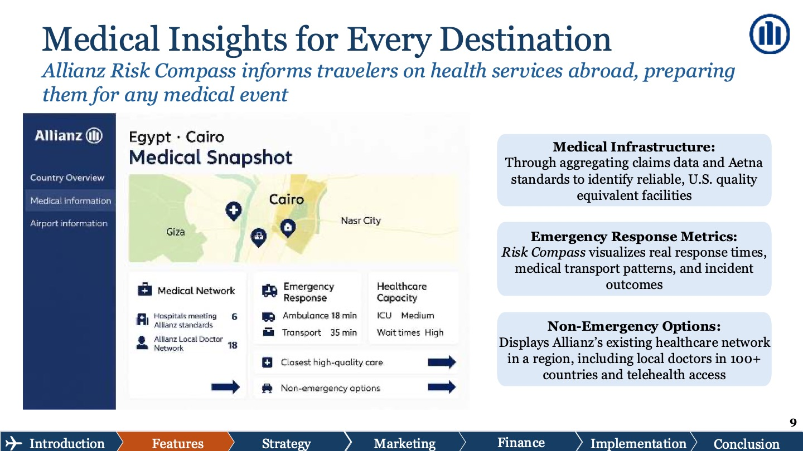

Allianz Risk Compass
A subscription travel-risk tool built on Allianz's own claims data. My five-person team designed it, sized it, and pitched it to Allianz executives.


Concept screen from our final deck, presented November 2025. Click to enlarge.
01
The opportunity
Travel insurance is hard to differentiate. Products are tightly regulated, the big players look alike, and distribution partners hold a lot of power.
So instead of competing on the policy itself, we looked at the experience around it and found a gap in how people plan trips. Allianz's most loyal customers, risk-averse travelers over 50, want peace of mind but face too many sources and too little they can trust.
of travelers feel overwhelmed by the number of choices when booking travel
of seniors are wary of travel because of healthcare and safety concerns abroad
of Americans aged 50+ plan to travel in the next year
Figures from the research cited in our final deck.
- Decision fatigue: no single, trusted place to assess travel risk.
- Unreliable data: most online sources are opinions, not data.
- Medical uncertainty abroad: unfamiliar healthcare systems and conflicting information.
- Low comparability: no clear way to compare airports, hospitals, and destinations.
02
The insight
Allianz already owns data its competitors would need decades to build.
Years of claims show which airports delay most and when, where baggage goes missing, and which hospitals meet Allianz's standards. Risk Compass turns that data into something travelers can use before anything goes wrong.
03
The product
Risk Compass lives on the Allianz website and in the Allyz app. Travelers get two free country-level searches, then pay $15 for 90 days of full access.
Location risk
Weather and natural disasters, transportation, disease outbreaks, and public safety, at the country and city level.
Medical
Facilities that meet Allianz and Aetna standards, emergency response metrics, and local doctors in 100+ countries plus telehealth.
Airport reliability
Delay and disruption patterns by time of day and season, plus baggage incidents, drawn from Allianz claims.


04
Meeting travelers earlier
Today, Allianz meets travelers right after they book a trip. Risk Compass moves that first touchpoint to the very start of planning, so trust is built before the insurance decision is made.
- Early planning
- Destination selection
- Booking
- Buy travel insurance
- Travel
- Post-trip
05
Sizing the market
We sized the opportunity conservatively, starting from Allianz's existing customers rather than the whole travel market.
06
Go-to-market
The plan had to reach travelers over 50 where they already spend time, and build trust along the way.
- ReferralsRefer friends or family after a trip and get 33% (about $5) off your next purchase. Travelers over 50 lean on personal recommendations.
- SearchSponsored results plus SEO on searches like “Is [city] safe for tourists?” and “Which airports have the worst delays?”
- Travel sitesBanners and widgets on platforms like Expedia, Booking.com, and Tripadvisor while people browse destinations and book trips.
- YouTube & Facebook15-second scenario ads and walkthroughs. 86% of people over 50 use YouTube, and 70% use Facebook.
- NewsletterA monthly email with reassuring stories and travel tips, built on content Allianz already produces.
- Partner adsTravel brands advertise to Risk Compass users, adding a second revenue stream.
07
The numbers
In the base case, Risk Compass earns $9.8M in its first year: $9.6M from subscriptions and $150K from partner ads. Against $15M of upfront investment, that's a 32% IRR, above the 25% hurdle rate.
In sensitivity tests, sales growth moved IRR the most (about ±5 points), followed by COGS/sales (±4.5) and SG&A/sales (±4).
08
Rollout plan
- Build the MVPMedical data, filtered search, and airport and location info.
- PilotEarly access for annual-plan customers in Allyz and on the website.
- Improve with A/B testsMeasure engagement, clarity, and perceived value.
- Full launchMarketing assets and full B2C integration.
09
My role
I was the team's project manager. I owned the product narrative, the go-to-market plan, and the financial model, which tied the acquisition plan to revenue through scenario and sensitivity analysis.
From the final deck
Selected slides
Click any slide to enlarge it. Scroll sideways for more.